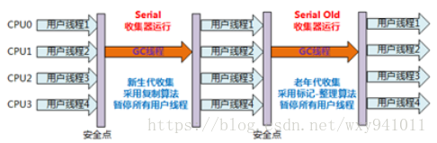
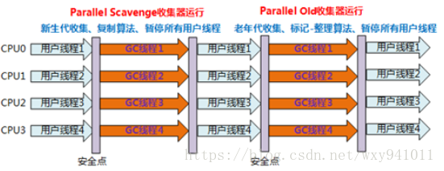
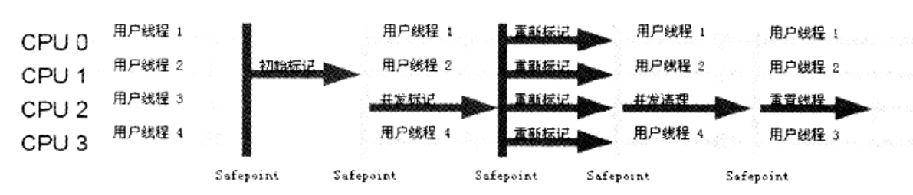

GC算法
早期GC算法
引用计数法
可达性分析算法
当对象到GC Roots没有任何引用链相连时，此时对象是不可达的。
此时该对象并不是“非死不可”，此时它暂时处于“缓刑”状态。第一次会被标记并且进行一次筛选，筛选的条件是对象是否有必要执行finalize()方法。以下两种情况会被视为没有必要执行：
- 对象没有覆盖finalize()方法
- finalize()方法已经被虚拟机调用过
如果对象被判定为有必要执行finalize()方法，在此方法的执行过程中，对象与引用链上任何对象发生关联，则此对象可在第二次标记的时候移出即将回收的集合。相反，如果还没有发生关联，则此时被真正回收。
引用的概念
- JDK1.2以前
- 引用
- 非引用
- JDK1.2以后
- 强引用： 普遍存在，类似“Object obj = new Object()”。只要强引用还在，则不会被GC。
- 软引用(Soft Reference)： 有用但并非必须的对象。这些对象在程序将要发生OOM之前进行二次回收。如果二次回收还没有足够内存，则抛OOM异常。
- 弱引用： 比Soft Reference更弱，这些对象只能活到下次GC之前。在GC的时候，无论内存是否足够，都会将此引用对象回收。
- 虚引用(PhantomReference)： 最弱的引用关系，其作用是在虚引用关联的对象被GC时会收到一个系统通知。
1
2
3
4
5
6
7
8
9
10
11
12
13
14
15
16
17
18
19
20
21
22
23
24
25
26
27
28
29
30
31
32
33
34
35
36
37
38
39
40
41
42/**
* 此代码的功能：
* 1 对象可以在被GC时自我拯救
* 2 自我拯救的机会只有一次，因为一个对象的finalize()方法只能被系统自动调用一次
*/
public class FinalizeEspaceGC {
public static FinalizeEspaceGC SAVE_HOOK = null;
public void isAlive(){
System.out.println("yes,i am still alive!");
}
@Override
protected void finalize() throws Throwable {
super.finalize();
System.out.println("finalize method executed!");
FinalizeEspaceGC.SAVE_HOOK = this;
}
public static void main(String[] args) throws Throwable{
SAVE_HOOK = new FinalizeEspaceGC();
//对象第一次成功拯救自己
SAVE_HOOK = null;
System.gc();
//因为finalize()方法优先级很低，暂停0.5秒
Thread.sleep(500);
if(SAVE_HOOK != null) {
SAVE_HOOK.isAlive();
}else {
System.out.println("no,i am dead!");
}
//下面代码与上面完全一样，但是这次却自救失败了
SAVE_HOOK = null;
System.gc();
//因为finalize()方法优先级很低，暂停0.5秒
Thread.sleep(500);
if(SAVE_HOOK != null) {
SAVE_HOOK.isAlive();
}else {
System.out.println("no,i am dead!");
}
}
}
回收方法区
主要包括两个部分：
- 废弃常量：如果常量池中的某个字符串在系统中没有任何一个String对象的引用，那么如果发生内存回收，则此常量会被系统清理出常量池。
- 无用的类：满足以下三个条件：
- 标记和清除两个过程的效率都不高
- 空间问题，标记清楚后会产生大量不连续的内存碎片
复制算法
- 将可用内存划分为大小相等的两块，每次只是用其中一块
- 当这块内存用完后，将存活的对象复制到另一块内存中
- 将已使用的内存空间清理掉
改进复制算法
由于新生代的迭代速率较快，所以内存不需要按照1：1的比例划分。而是将内存分为一块较大的Eden区域和两块较小的Survivor空间，每次使用Eden和其中一块Survivor。标记-整理算法
让所有存活的对象往内存一端移动，然后清理掉边界以外的内存。分代收集算法
根据对象存活周期不同将内存分为几块： - 新生代
- 老年代
根据各个年代的特点采用最适当的收集算法。
HotSpot
可达性分析
枚举根节点
GC停顿
在整个分析期间，为了保证分析准确性，整个分析过程中，对象引用不能变化。因此,GC时必须停顿所有的Java执行线程。
OopMap
- 执行系统停顿下来时，不需要检查完所有执行上下文及全文引用位置，而使用OopMap。
- 类加载完成时，HotSpot会记录偏移量上的类型供GC扫描。
SafePoint
- 程序并非在所有位置都停顿下来进行GC，只有在达到SafePoint时才暂停。
- SafePoint不能太少导致GC等待时间过长，SafePoint不能太多导致GC花费更多内存空间。
- 选取标准：是否具有让程序长时间执行的特征。
抢断式中断
- 首先将所有线程中断，如果有线程中断的地方不在SafePoint上则恢复，让它跑到SafePoint上。
- 现在几乎没有虚拟机采用
主动式中断
- 当GC需要中断线程的时候，不直接对线程操作，而是设置一个标志，各个线程主动轮询这个标志，如果发现中断标志为真，则自己中断挂起。
SafeRegion
在一段代码片段中，引用关系不会发生变化。在这个区域中任意地方开始GC都是安全的。垃圾收集器
算法是方法论，而垃圾收集器就是具体实现。并行和并发
- 并行：多个垃圾收集器线程同时运行，但是用户线程暂停。
- 并发：垃圾收集器线程和用户线程同时运行，但是不是同一个CPU处理。
Serial收集器
- 最基本、发展历史最悠久
- 新生代收集器
- 单线程收集器
- Client模式下首选
ParNew收集器
- Serial收集器的多线程版
- 新生代收集器
- Server模式下首选
Parallel Scavenge 收集器
- 新生代收集器
- 并行多线程收集器
- 目的是达到一个可控制的吞吐量，而不是关注于缩短用户线程的停顿时间。
- 吞吐量=运行用户代码时间/（运行用户代码时间 + 垃圾收集时间）
精确控制吞吐量的参数：
控制最大垃圾收集停顿时间，大于0的毫秒数。并不是设置的小就能使系统垃圾收集速度变快。
1
-XX:MaxGCPauseMillis
直接设置吞吐量大小，0到100的整数。
1
-XX:GCTimeRatio
GC自适应调节策略：根据当前系统运行情况收集性能监控信息，动态调整新生代大小、Eden与Survivor区比例、老年代对象年龄等参数，无需手工设置。提供最合适的停顿时间或者最大的吞吐量。
1
2#开关参数
-XX:+UseAdaptiveSizePolicy

Serial Old收集器
- Serial收集器的老年代版本
- 单线程收集器
- 使用标记整理算法
- 主要是Client端虚拟机使用
- 如果在Server模式下，主要有两大用途：
- Parallel Scavenge 收集器的老年代版本
- 多线程收集器
- 使用标记整理算法
CMS(Concurrent Mark Sweep)收集器
- 以获取最短回收停顿时间为目标
- 使用标记清除算法
- 运作过程如下：
- 初始标记(CMS initial mark)：标记GC Roots能直接关联到的对象，速度很快。
- 并发标记(CMS concurrent mark)：进行GC Roots Tracing的过程
- 重新标记(CMS remark)：修正并发标记期间因用户程序继续运作而导致标记产生变动的那一部分对象的标记记录，比初始标记稍长，但远比并发标记时间短。
- 并发清除(CMS concurrent sweep)：

总体来说，CMS收集器的内存回收过程是与用户线程并发执行的。
CMS的三个明显缺点
- CPU大于4个时，CMS回收垃圾线程随着CPU数量的增加而减少；而当CPU少于4个时，CMS对用户程序的影响就可能变得很大。
- 增量式并发收集器(Incremental Concurrent Mark Sweep /i-CMS)：但是效果一般，不推荐使用。
- 无法处理浮动垃圾，Concurrent Mode Failure会导致另一次Full GC产生而只能将这部分回收失败的垃圾留在下次GC再清理。因此CMS必须预留一部分空间提供给并发收集时的程序使用。
- JDK1.5默认设置老年代使用86%后激活CMS收集器，如果应用中老年代增长不是太快，可以调高参数-XX:CMSInitiatingOccupancyFraction的值来提高触发百分比。
- JDK1.6中，CMS启动阈值已经提高到92%。
- 如果运行期间预留的内存不够CMS，就会出现Concurrent Mode Failure，此时会启动后备预案：临时启用Serial Old收集器重新进行老年代垃圾收集，这样会导致停顿时间很长。
- 因此，参数-XX:CMSInitiatingOccupancyFraction设置的太高容易导致大量Concurrent Mode Failure，性能反而会降低。
- CPU大于4个时，CMS回收垃圾线程随着CPU数量的增加而减少；而当CPU少于4个时，CMS对用户程序的影响就可能变得很大。
- 当今收集器技术发展最前沿的成果之一
- 面向服务端应用
- 具有以下特点
- 并行和并发
- 分代收集
- 将Java堆划分为多个大小相等的独立区域（Region），新生代和老年代的概念还在，只是不再是物理隔离，而是一部分Region的集合。
- 空间整合
- 可预测的停顿
- 使用Remembered Set来避免在整个Java堆中进行全区域的垃圾收集。
- G1跟踪各个Region里的垃圾堆积的价值大小（回收所获得的空间及回收所需的时间），后台维护一个优先列表。
- 每次根据允许的收集时间，优先回收价值最大的Region（Garbage-First）。
G1收集器运作大致可划分为以下步骤：
- 初始标记(Initial Marking)
- 并发标记(Concurrent Marking)
- 最终标记(Final Marking)
- 筛选回收(Live Data Counting and Evacuation)
理解GC日志
1
233.125:[GC [DefNew: 3324K->152K(3712K),0.0025925 secs] 3324K->152K(11904K) 0.0031680 secs]
100.667:[Full GC [Tenured: 0K->210K(10240K),0.0149142 secs]4603K->210K(19456K),[Perm : 2999K->2999K(21248K)],0.0150007 secs][Times:user=0.01 sys=0.00,real=0.02 secs]
最前面的数字 33.125: 和 100.667：
- 表示GC发生的时间，含义是从Java虚拟机启动以来经过的秒数
- GC日志开头的 [GC 和 [Full GC：
- 说明这次垃圾收集的停顿类型，而不是区分新生代GC还是老年代GC
- 如果有Full说明是发生了停顿（Stop-The-World）
- 接下来的 [DefNew 、[Tenured 、 [Perm
- 表示GC发生的区域。
- DefNew -> Defualt New Generation Serial收集器的新生代
- ParNew -> Parallel New Generation Parallel Scavenge收集器的新生代
- 表示GC发生的区域。
- 后面方括号内部的3324K->152K(3712K)：
- 表示GC前该内存已使用量 -> GC后该内存区域已使用量 (该内存区域总容量)
- 方括号外3324K->152K(11904K)：
- 表示GC前Java堆已使用量 -> GC后Java堆已使用量 (Java堆总容量)
- 0.0031680 secs：
- 表示该内存区域GC所占用的时间，单位为秒。
- 有的收集器会给出更具体的数据，如[Times : user=0.01 sys=0.00,real=0.02 secs]
- 这里面的user、sys、real与Linux的time命令所输出的时间含义一致。
- user 用户消耗CPU的时间
- sys 内核消耗CPU的时间
- real 操作从开始到结束所经过的墙钟时间（Wall Clock Time）
- 这里面的user、sys、real与Linux的time命令所输出的时间含义一致。
- GC常用参数总结
| 参数 | 描述 |
|---|---|
| UseSerialGC | 虚拟机在Client下的默认值，打开后，使用Serial + Serial Old进行内存回收 |
| UseParNewGC | 打开后，使用ParNew + Serial Old进行内存回收 |
| UseConcMarkSweepGC | 打开后，使用ParNew + CMS + Serial Old（CMF备用）进行内存回收。 |
| UseParallelGC | 虚拟机在Server模式下的默认值，打开后，使用Parallel Scavenge + Serial Old进行内存回收 |
| UseParallelOldGC | 打开后，使用Parallel Scavenge + Parallel Old 进行内存回收 |
| SurvivorRatio | 新生代中Eden与Survivor的容量比，默认为8，代表：Eden：Survivor=8：1 |
| PretenureSizeThreshold | 直接晋升到老年代的对象大小 |
| MaxTenuringThreshold | 晋升到老年代的对象年龄。每经过一次Minor GC后年龄加1 |
| UseAdaptiveSizePolicy | 动态调整Java堆中各个区域的大小及进入老年代的年龄 |
| HandlePromotionFailure | 是否允许分配担保失败，即老年代的剩余空间不足以应付新生代的整个Eden和Survivor区的所有对象都存活的极端情况 |
| ParallelGCThreads | 设置并行GC时进行内存回收的线程数 |
| GCTimeRatio | GC时间占总时间的比率，默认为99，即允许1%的GC时间。仅在使用Parallel Scavenge收集器时生效 |
| MaxGCPauseMillis | 设置GC最大停顿时间。仅在使用Parallel Scavenge收集器时生效 |
| CMSInitiatingOccupancyFraction | 设置CMS在老年代空间被使用多少后触发垃圾收集。仅在使用CMS收集器时生效 |
| UseCMSCompactAtFullGollection | 设置CMS收集器在完成垃圾收集后是否要进行一次内存碎片整理。仅在使用CMS收集器时生效 |
| CMSFullGCsBeforeCompaction | 设置CMS收集器在进行若干次GC后再启动一次内存碎片整理。仅在使用CMS收集器时生效 |
内存分配与回收策略
对象内存分配，可能分为以下几种情况：
堆：大多数分配在堆上
- Eden
- TLAB：如果启动了本地线程分配缓冲，优先在TLAB上分配
- Tenured：有可能直接分配在老年代中
栈：JIT编译有可能间接分配在栈上
代码测试
Serial / Serial Old收集器
代码
1
2
3
4
5
6
7
8
9
10
11
12
13
14
15
16
17
18
19/**
* VM Args:
* -verbose:gc -Xms20M -Xmx20M -Xmn10M -XX:+PrintGCdetails -XX:SurvivorRatio=8
* -verbose:gc 输出GC的详细情况
* -Xms20M -Xmx20M 限值Java堆大小为20MB
* -Xmn10M 新生代10M
* -XX:+PrintGCdetails 打印内存回收日志
* -XX:SurvivorRatio=8 Eden区与Survivor区的内存比8:1
*/
public class Serial {
private static final int _1MB = 1024 * 1024;
public static void testAllcation(){
byte[] allocation1,allocation2,allocation3,allocation4;
allocation1 = new byte[2 * _1MB];
allocation2 = new byte[2 * _1MB];
allocation3 = new byte[2 * _1MB];
allocation4 = new byte[4 * _1MB]; //出现一次Minor GC
}
}运行结果：
1
2
3
4
5
6
7
8
9
10
11
12"D:\Program Files (x86)\Java\jdk1.8.0_171\bin\java.exe" -verbose:gc -Xms20M -Xmx20M -Xmn10M -XX:+PrintGCDetails -XX:SurvivorRatio=8 "..." com.laowang.vm.allocation.Serial
[GC (Allocation Failure) [DefNew: 7474K->583K(9216K), 0.0039100 secs] 7474K->6727K(19456K), 0.0227873 secs] [Times: user=0.00 sys=0.00, real=0.01 secs]
Heap
def new generation total 9216K, used 4843K [0x07400000, 0x07e00000, 0x07e00000)
eden space 8192K, 52% used [0x07400000, 0x078290f8, 0x07c00000)
from space 1024K, 56% used [0x07d00000, 0x07d91cc8, 0x07e00000)
to space 1024K, 0% used [0x07c00000, 0x07c00000, 0x07d00000)
tenured generation total 10240K, used 6144K [0x07e00000, 0x08800000, 0x08800000)
the space 10240K, 60% used [0x07e00000, 0x08400030, 0x08400200, 0x08800000)
Metaspace used 211K, capacity 2280K, committed 2368K, reserved 4480K
Process finished with exit code 0
大对象直接进入老年代
代码
1
2
3
4
5
6
7
8
9
10
11
12
13
14
15
16/**
* VM Args:
* -verbose:gc -Xms20M -Xmx20M -Xmn10M -XX:+PrintGCDetails -XX:SurvivorRatio=8
* -XX:PretenureSizeThreshold=3145728 设置大于3MB的对象直接进入老年代，这里不能直接写3MB
*/
public class Tenured {
private static final int _1MB = 1024 * 1024;
public static void testPretenureSizeThreshold(){
byte[] allocation;
allocation = new byte[4 * _1MB];
}
public static void main(String[] args) {
testPretenureSizeThreshold();
}
}运行结果
1
2
3
4
5
6
7
8
9
10
11"D:\Program Files (x86)\Java\jdk1.8.0_171\bin\java.exe" -verbose:gc -Xms20M -Xmx20M -Xmn10M -XX:+PrintGCDetails -XX:SurvivorRatio=8 -XX:PretenureSizeThreshold=3145728 "..." com.laowang.vm.allocation.Tenured
Heap
def new generation total 9216K, used 1494K [0x07600000, 0x08000000, 0x08000000)
eden space 8192K, 18% used [0x07600000, 0x07775ab0, 0x07e00000)
from space 1024K, 0% used [0x07e00000, 0x07e00000, 0x07f00000)
to space 1024K, 0% used [0x07f00000, 0x07f00000, 0x08000000)
tenured generation total 10240K, used 4096K [0x08000000, 0x08a00000, 0x08a00000)
the space 10240K, 40% used [0x08000000, 0x08400010, 0x08400200, 0x08a00000)
Metaspace used 210K, capacity 2280K, committed 2368K, reserved 4480K
Process finished with exit code 0
长期存活的直接进入老年代
代码
1
2
3
4
5
6
7
8
9
10
11
12
13
14
15
16
17
18
19
20
21/**
* VM Args:
* -verbose:gc -Xms20M -Xmx20M -Xmn10M -XX:+PrintGCDetails -XX:SurvivorRatio=8
* -XX:MaxTenuringThreshold=1 经过1次GC后进入Survivor的对象没被回收，第二次就直接进入tenured
* -XX:+PrintTenuringDistribution 打印
*/
public class TenuringThreshold {
private static final int _1MB = 1024 * 1024;
public static void testTenuringThreshold(){
byte[] allocation1,allocation2,allocation3;
allocation1 = new byte[_1MB / 4];
allocation2 = new byte[4 * _1MB];
allocation3 = new byte[4 * _1MB];
allocation3 = null;
allocation3 = new byte[4 * _1MB];
}
public static void main(String[] args) {
testTenuringThreshold();
}
}运行结果
1
2
3
4
5
6
7
8
9
10
11
12
13
14
15
16
17
18"D:\Program Files (x86)\Java\jdk1.8.0_171\bin\java.exe" -verbose:gc -Xms20M -Xmx20M -Xmn10M -XX:+PrintGCDetails -XX:SurvivorRatio=8 -XX:MaxTenuringThreshold=1 -XX:+PrintTenuringDistribution "..." com.laowang.vm.allocation.TenuringThreshold
[GC (Allocation Failure) [DefNew
Desired survivor size 524288 bytes, new threshold 1 (max 1)
- age 1: 886848 bytes, 886848 total
: 5682K->866K(9216K), 0.0037215 secs] 5682K->4962K(19456K), 0.0037612 secs] [Times: user=0.00 sys=0.00, real=0.00 secs]
[GC (Allocation Failure) [DefNew
Desired survivor size 524288 bytes, new threshold 1 (max 1)
: 4962K->0K(9216K), 0.0010335 secs] 9058K->4955K(19456K), 0.0010503 secs] [Times: user=0.00 sys=0.00, real=0.00 secs]
Heap
def new generation total 9216K, used 4178K [0x07200000, 0x07c00000, 0x07c00000)
eden space 8192K, 51% used [0x07200000, 0x07614938, 0x07a00000)
from space 1024K, 0% used [0x07a00000, 0x07a00000, 0x07b00000)
to space 1024K, 0% used [0x07b00000, 0x07b00000, 0x07c00000)
tenured generation total 10240K, used 4955K [0x07c00000, 0x08600000, 0x08600000)
the space 10240K, 48% used [0x07c00000, 0x080d6ea8, 0x080d7000, 0x08600000)
Metaspace used 219K, capacity 2280K, committed 2368K, reserved 4480K
Process finished with exit code 0
动态对象年龄判断
- 当Survivor中的相同年龄的所有对象大小总和大于Survivor的一半时，年龄大于或等于该年龄的对象就可以直接进入老年代。不用等到MaxTenuredThreshold设置的值。
空间分配担保
- 在Minor GC之前，虚拟机会先检查老年代的连续内存空间够不够新生代所有对象的内存空
- 当大量对象在Minor GC后仍然存活，就需要老年代进行分配担保
- 把Survivor无法容纳的对象直接进入老年代
- 要进行这样的担保，首先要保证老年代的空间足够容纳这些对象
- 对象有多少能够最终存活下来在实际完成内存回收之前无法确定，所以只有按照以前晋升老年代的对象容量的平均值做参考
- 如果不够，再确定是否需要进行Full GC来腾出更多空间